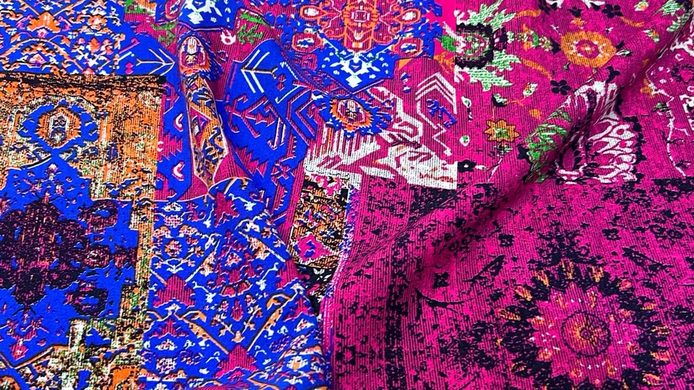

Metreyle kumaş, dokusunu görerek.
Pamuk viskon, türlü viskon, müslin, keten, scuba ve bürümcük: 150–180 cm enlerde, 1 metre ve katları halinde kesilir, tek parça gönderilir. Mağazayı sanal turla gezin, kumaşı mankende deneyin, Trendyol güvencesiyle sipariş verin.
Mağazanın içinde gezin
Duvarlarda asılı 31 kumaş, gerçek fotoğraflarıyla. Bakmak için sürükleyin, yürümek için ok tuşlarını ya da köşedeki düğmeleri kullanın; bir kumaşa tıklayınca ayrıntısı açılır.
Kumaş üstünde nasıl durur?
Kumaşı seçin; kadın ya da erkek mankende elbise, etek, bluz, gömlek veya pantolon olarak görün. Etek ve elbise gerçek zamanlı kumaş fiziğiyle sarkar: yer çekimi, vücutla çarpışma, yürürken savrulma. Dar kalıplar vücut hatlarını birebir izler.
Gerçek zamanlı 3B görselleştirme: döküm, ortalama gramajlı dokuma kumaş için hesaplanır; dikim modeline ve kumaşın ağırlığına göre değişir. Renk ve desen gerçek ürün fotoğrafından alınır.
Kumaş grupları
Her grup kendi eni, gramajı ve bileşenine göre listelenir. Bir gruba tıklayınca o grubun tüm renkleri açılır.
Tüm kumaşlar ve battaniyeler
Fiyatlar metre başınadır (battaniyede adet). Güncel fiyat ve stok Trendyol'daki ürün sayfasında geçerlidir.
Üç adımda kapında
Metreyi belirle
Kumaşlar 1 metre ve katları halinde satılır. 3 adet alırsan 3 metre tek parça kesilir; 3,5 metre gibi ara ölçüler alınamaz.
Trendyol'da sepete ekle
Her ürünün sayfasındaki "Trendyol'da satın al" düğmesi seni doğrudan ürüne götürür. Ödeme ve iade Trendyol güvencesiyle.
Hızlı teslimat
Bursa'dan hızlı teslimatla gönderilir; 350 TL ve üzeri siparişlerde kargo ücretsiz. 15 gün içinde ücretsiz iade.
Tekstilin başkentinden
Ata Kumaş, Bursa Yıldırım'da yerleşik bir kumaş satıcısı. Trendyol mağazasında 2026'dan bu yana pamuk viskon, türlü viskon, müslin ve desenli kumaşları metreyle; polar battaniyeleri adetle satıyor.
Her kumaşın eni, gramajı ve bileşeni ürün sayfasında yazar. Sorulara Trendyol üzerinden dakikalar içinde cevap verilir.
- KonumBursa / Yıldırım
- Trendyol satıcı puanı9.5 / 10
- Satış birimi1 metre ve katları
- Kumaş enleri100 · 150 · 180 cm
- Kargo350 TL üzeri ücretsiz
- İade15 gün ücretsiz
Toptan veya özel ölçü için yazın
Mağazadaki tüm ürünler Trendyol üzerinden sipariş edilir. Toptan alım, farklı en ve özel kesim talepleri için bize ulaşın.